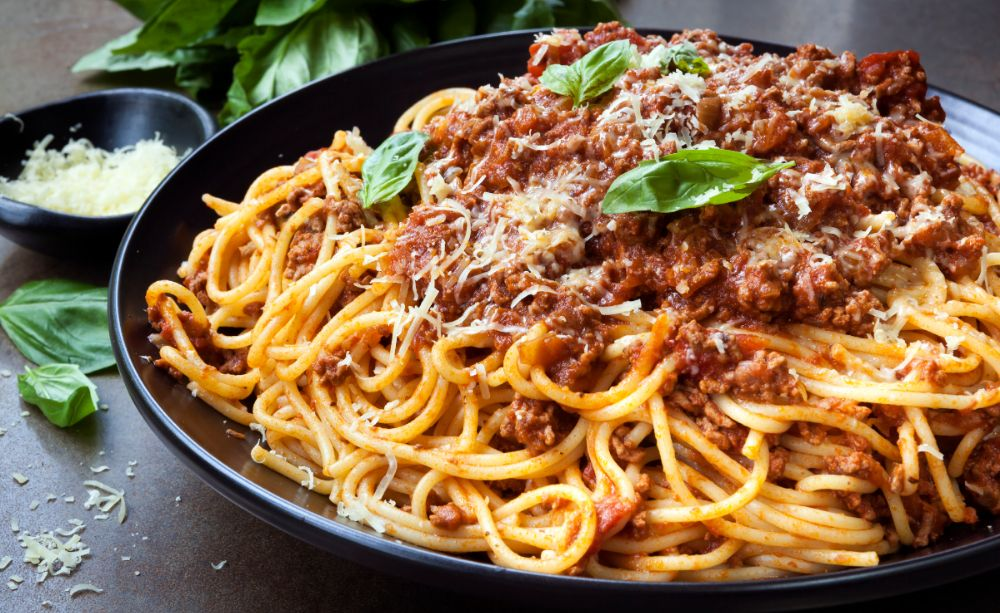

Classic Bolognese

A classic pasta bolognese with shredded cheese
Make an extra large batch of everyone's everyday favorite, spaghetti and meat sauce, and freeze.
If you want to vary the taste, try using ground lamb or game instead of ground beef!.
Ingredients
For 8 portions
- Ground beef 800g
- Yellow onions 2 pieces
- Garlic cloves 4 pieces
- Carrots 2 pieces
- Celery 1 stalk
- Butter 25g
- Fresh oregano 1 teaspoon
- Tomato puree ½dl
- Salt ½ spoon
- Black pepper 1 teaspoon
- Crushed tomatoes 400 g each, 2 cans
- Cow milk 2dl
Do this
- Peel onions, garlic and carrots. Finely chop the onion, garlic, carrot and celeriac.
Fry the chopped vegetables in half of the butter in a large pot for about 10 minutes without it taking colour, add oregano.
- Brown the minced meat in batches with tomato puree in the remaining butter in a frying pan.
Add the minced meat to the pot, salt and pepper.
- Stir in crushed tomatoes and milk, let simmer covered for about 1 hour until the sauce is smooth.
Done
Back